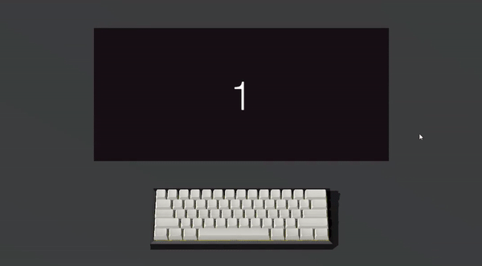

About Me
I am a programmer from singapore who is highly passionate about creating interactive and beautiful experiences
for others through my coding. This has lead me to pursue a career in game development as I get to express myself
in this age of digital media. I have a long history of game development, learning Unity3D through youtube tutorials
since I was only 13 years old. Ever since, I have developed my passion for coding and game development by learning
beyond my sylabus and exploring new boundaries in programming.
Learn more about my past/present projects by clicking on the various tabs.
Skillset
- C#
- C++
- Java
- Javascript
- Python
- Unity Game Engine
- Adobe Photoshop
- Adobe Illustrator
- Adobe Premier Pro
Contact Me
| Email: | ryanntannn@gmail.com |
|---|---|
| Instagram: | @ryanntannn |
| linkedin: | Connect on Linkedin |
| Katto Studio: | http://www.loki.katto.studio/ |
FYP2020 - Project Aegis
Q1-Q3 2020

Fig 1. an early demo showcasing gun mechanics
Project Aegis was a Virtual Reality project done for the Singapore Armed Forces for my
Final Year Project in Singapore Polytechnic. The size of the team was 10 people, double
the average size of an average FYP team. I undertook the role of one of the two programming leads,
and helped plan the technical aspects of the project and helped streamline the programming workflow
by enforcing a scrum board and introducing a pub-sub code design system.
Personally, I took up tasks such as programming a gun system that allows realistic replication of guns,
including a safety and cocking mechanism. Unfortunately, I am unable to share much about this project as
our client has requested for us not to disclose too much about the project.
Estella
Q3-Q4 2019
Fig 1. poster made by me showcasing the 3 bosses in the game
Estella was a Single Player Role Playing Game made for a School Project in my second year of education in Singapore Polytechnic. The player plays as a Estella, a mage who has mastery of 5 elements, fire, water, wind, earth and lightning, and can combine the elements through numerous interactions to unleash powerfull combinations on her foes. Estella's hometown is attacked by Skylark, a ruthless dictator seeking to take over the world. Estella ventures accross the world to seek revenge on her hometown and to save the world from evil skylark

Fig 2. player fighting a witch
I worked on the level design of the game for 2 levels, Estella's hometown and the dessert city. Through this project I learnt many terraining techniques and researched into level design principals. I drew inspiration from masterpieces such as Breath Of The Wild and Guild Wars 2 for my colour pallette and overall aesthetic. I also designed the user interface and created a dialog and questing system that guides the players through the game and its story. I also designed and programmed the second boss fight, the ghost of an ancient priest who uses magic pillars to crush the player.
Loki - Typing Project
Q1 2020 - ONGOING

Fig 1. early preview of loki
Loki is a competitve typing game that rewards players
who type both quicky and accurately, with the implementation of a combo counter. The player can also earn points to decorate
their ingame keyboard, to feed their cosmetic need. Loki is a project under Katto Studios, a partnership that I founded in 2020
alongside 2 friends who are equally passionate about game development.
Find out more about the project at loki.katto.studio
Augment - RETRO INSPIRED GAME JAM 2019
(AUDIENCE CHOICE WINNER)
Q4 2019

Fig 1. Augment gameplay video
In 2019, my friends and I participated in the Retro Inspired Game Jam organised by James Cook University. We created the game Augment, which is an old school beat-em-up with a vapour-wave art style. The player plays as a cyborg with the ability to morph into different weapons, which have different abilities and traits. The game earned us the audience choice award, as well as one PlayStation 4 each. We also got to meet and interact with Mike Pondsmith, the creator of cyberpunk, who was one of the judges at the event.
VR FISHING
Q2 2020

Fig 1. gameplay of our vr fishing game
VR Fishing is a fishing game where the player catches big fishes in VR. The game features 15 different species of fish, each with their own set of traits. We used scriptable objects to implement adjustable variables to the different fishes such as their rarity, bite rate, aggressiveness and chance to get away. We also did research into BOIDs to decorate the pond with a school of fish which move similarly to how they would cluster together and move in real life.